The Motivation
Every organisation sits on a gold mine of data. Sales numbers, customer behaviour, product performance, revenue trends — it is all there, waiting inside a PostgreSQL database. The problem is that the people who need these insights the most — product managers, executives, marketing leads — cannot write SQL. They file a ticket with the data team, wait two days, and get a spreadsheet that may or may not answer their original question.
Meanwhile, the data team is drowning. Eighty percent of their queries are ad-hoc one-offs: "What were our top 10 products by revenue last quarter?" or "Show me customer retention by signup month." These are not hard queries, but they require a human to translate English into SQL, run the query, sanity-check the results, compute some statistics, build a chart, and write a summary. The entire loop takes anywhere from thirty minutes to two days depending on the queue.
What if an AI agent could handle the entire analyst workflow? You ask a question in plain English. The agent reads the database schema, plans the analysis, generates safe SQL, executes it, runs statistical tests, creates charts, and writes a professional report — all in under a minute. That is not a hypothetical. That is what the AI Data Analyst delivers.
The questions this blog answers:
- How do you build a multi-step AI agent that decomposes business questions into executable analysis plans?
- How do you generate safe, read-only SQL from natural language without risking injection or data mutation?
- How does conditional routing handle SQL errors, empty results, and retries gracefully?
- How do you run statistical analysis (descriptive stats, t-tests, ANOVA, correlation, trends) without an LLM?
- How do you make the entire pipeline observable with LangSmith, Langfuse, Helicone, and Braintrust?
- How do you wrap everything in a Streamlit dashboard that non-technical users can actually use?
Technology Stack
AI Data Analyst
Complete codebase: 7-node LangGraph pipeline, safe SQL generation, statistical analysis toolkit, chart builder, markdown reporter, Streamlit dashboard, and multi-provider observability stack.
View RepositoryThe Challenge
The Challenge is building an end-to-end analyst agent that is safe, resilient, statistically rigorous, and observable in production. Solving any one of these problems in isolation produces a system that fails the moment it meets real-world data.
- SQL injection and data mutation — An LLM generating SQL can produce
DROP TABLE,UPDATE, orDELETEstatements. Without strict safety guardrails, a single malformed query could destroy production data. - Empty results and failed queries — Not every generated SQL query will succeed. Column names change, tables get renamed, syntax varies across databases. The agent must recover gracefully, not crash or return blank reports.
- Statistical rigour without hallucination — Asking an LLM to "compute the mean and standard deviation" produces plausible-looking numbers that may be entirely fabricated. Statistical calculations must be deterministic — pure Python, no LLM.
- No visibility into decisions — When a 7-node pipeline produces a wrong answer, you need to see exactly which node failed, what the LLM was thinking, and how long each step took. Without observability, debugging is guesswork.
- Graceful degradation — If the SQL fails after two retries, the system should still produce a partial report explaining what happened, not throw an unhandled exception.
Naive Text-to-SQL
(Single LLM call + execute)
- No SQL safety checks — can mutate data
- Crashes on query errors, no retry
- LLM "calculates" statistics (hallucinated)
- No tracing, no debugging capability
- All-or-nothing: fails silently
- No schema awareness — guesses table names
AI Data Analyst
(7-node LangGraph pipeline)
- Keyword blocklist + read-only sessions + timeouts
- Error handler with 2 retries and LLM feedback
- Pure pandas/scipy — deterministic stats
- 4 observability providers, full trace trees
- Graceful degradation to partial reports
- Schema introspection before every query
Lucify the Problem
Imagine you walk into a large research library and ask the front desk: "What were the most popular science books last year?" You do not know which section to look in, which catalogue system the library uses, or how to interpret the checkout statistics. You just have a question.
The Research Assistant Analogy
A skilled research assistant handles your request in stages. First, they read the catalogue to understand what sections and shelving systems exist — that is schema introspection. Then they plan their approach: "I will check the checkout logs, filter by the science section, and rank by frequency" — that is the planner.
Next, they look up the data in the library's records system — that is the SQL agent. If the record system returns an error ("that shelf code does not exist"), they try a different approach — that is the error handler with retry. Once they have the raw data, they count, rank, and compute averages by hand — that is the analyst running deterministic statistics. They then draw a bar chart of the top 10 — that is the visualiser. Finally, they write a summary memo with findings and recommendations — that is the reporter.
Where the analogy breaks down: a human assistant takes hours. Our AI agent completes this entire loop in under sixty seconds, handles statistical tests (t-tests, ANOVA, correlation analysis) automatically, and logs every decision for later audit via four different observability providers.
Lucify the Jargon
Before we dive into the architecture, let us define the five key concepts that underpin the entire system. Each gets a definition, a concrete example, and a real-world analogy.
LangGraph StateGraph
Definition: A directed acyclic graph (DAG) framework where each node is a function that reads and writes to a shared state object. Nodes are connected by edges, and conditional edges allow branching logic based on the current state.
Example: Our graph has 7 nodes: introspect_schema → planner → sql_agent → [routing] → analyst → visualizer → reporter. The state is an AnalystState Pydantic model containing the question, schema summary, SQL result, analysis, charts, and final report.
Analogy: Think of an assembly line in a factory. Each station (node) performs one operation on the product (state) and passes it to the next station. If quality control (conditional routing) detects a defect after the welding station (SQL agent), it sends the product back to the repair station (error handler) instead of forward to painting (analyst).
Conditional Routing
Definition: A function that inspects the current state after a node completes and returns the name of the next node to execute. This allows the graph to branch dynamically at runtime rather than following a fixed sequence.
Example: After sql_agent runs, the route_after_sql function checks three conditions: (1) if there was an error and retries remain, go to sql_error_handler; (2) if there was an error and retries are exhausted, skip to reporter for a partial report; (3) if the query returned zero rows, skip to reporter; (4) if data exists, proceed to analyst.
Analogy: A GPS recalculating your route. If the highway is blocked (SQL error), it reroutes you through a side road (error handler). If the side road is also blocked (retries exhausted), it takes you directly to the nearest rest stop (reporter with partial results) instead of leaving you stranded.
Schema Introspection
Definition: Querying the database's information_schema and pg_catalog to discover all tables, columns, data types, primary keys, and estimated row counts — before generating any SQL. This gives the LLM accurate context instead of guessing table names.
Example: The SchemaIntrospector produces a text summary like: Table: customers (~500 rows) — customer_id INTEGER PK, first_name VARCHAR, email VARCHAR UNIQUE, signup_date DATE. This summary is injected into every LLM prompt as context.
Analogy: Before cooking a meal, you open the fridge and pantry to see exactly what ingredients you have. You do not guess that you might have chicken — you look. Schema introspection is the agent opening the database's "pantry" before writing a single line of SQL.
Statistical Analysis Pipeline
Definition: A pure-Python toolkit (StatsToolkit) that runs deterministic statistical computations on query results using pandas and scipy. It computes descriptive statistics (mean, median, std, skewness, kurtosis), Pearson correlation matrices, Welch's t-tests, one-way ANOVA, and linear trend analysis — all without calling an LLM.
Example: Given a DataFrame of product revenue, StatsToolkit.full_analysis() returns the mean revenue ($245.67), standard deviation ($89.12), identifies a positive trend (slope +$12.34/month, R² = 0.87), and flags two product categories as statistically different (p = 0.003 via ANOVA).
Analogy: An accountant with a calculator. They do not "feel" that revenue is trending up — they compute the exact slope, the R-squared, and the p-value. The calculator never hallucinates. That is why the analyst node uses scipy, not GPT-4o.
Observability Providers
Definition: External services that capture traces, spans, token counts, latencies, and costs for every LLM call and pipeline step. The AI Data Analyst supports four providers: LangSmith and Langfuse (callback-based, can run simultaneously) and Helicone and Braintrust (proxy-based, mutually exclusive).
Example: Langfuse captures a trace tree showing: introspect_schema (0.8s) → planner (2.1s, 847 tokens) → sql_agent (1.9s, 623 tokens) → analyst (0.3s, no LLM) → visualizer (2.4s, 512 tokens) → reporter (3.2s, 1,204 tokens). You can see exactly where time and tokens are spent.
Analogy: Security cameras in every room of a building. If something goes wrong on the third floor, you rewind the footage and see exactly what happened, when, and in what order. Without cameras (observability), you are left guessing which room the incident started in.
Make the Blueprint
The AI Data Analyst is a 7-node LangGraph pipeline. Each node has a single responsibility, communicates through a shared Pydantic state, and can be tested independently. Here is the high-level flow:
Pipeline Architecture
Node 1 — introspect_schema: Queries PostgreSQL's information_schema and pg_catalog to discover all tables, columns, data types, primary keys, and estimated row counts. Produces a text summary that becomes the LLM's database context for the rest of the pipeline.
Node 2 — planner: Takes the user's question and the schema summary, then uses GPT-4o with structured output to produce an AnalysisPlan containing the restated question, sub-questions, required tables, analysis type (trend, ranking, comparison, etc.), and suggested visualisations.
Node 3 — sql_agent: Receives the plan and generates a SQL query. Before execution, the query passes through a keyword blocklist (INSERT, UPDATE, DELETE, DROP, ALTER, CREATE, TRUNCATE, GRANT). The database connection enforces SET default_transaction_read_only = ON and SET statement_timeout = '30s'. Results are capped at 10,000 rows.
Node 4 — sql_error_handler: If the SQL agent returns an error and retry_count < 2, this node feeds the error message back to GPT-4o along with the original plan and schema, asking it to fix the query. The corrected query goes back to sql_agent.
Node 5 — analyst: Converts query results into a pandas DataFrame and runs StatsToolkit.full_analysis() — descriptive statistics, correlation matrix, and contextual tests (t-test, ANOVA, trend analysis). No LLM call. Deterministic, reproducible numbers.
Node 6 — visualizer: Uses GPT-4o with structured output (ChartSpecs) to recommend chart types based on the data shape and analysis insights. ChartBuilder renders the charts using matplotlib, seaborn, and plotly.
Node 7 — reporter: Takes the question, SQL, results, analysis, and chart references, and produces a structured markdown report with Executive Summary, Question, Methodology, Key Findings, Visualisations, and Recommendations.
Compiled State Graph
The diagram below shows the complete compiled LangGraph state graph — the full DAG topology with all nodes, edges, and conditional routing paths as compiled by LangGraph's runtime.
Route After SQL
The most critical decision point in the pipeline is what happens after the SQL agent executes. Four paths are possible depending on the query result.
Execute the Blueprint
Now we walk through the implementation step by step. Each subsection covers one component of the system, with the actual code that powers it.
Step 1: Project Setup and Configuration
The entire application is configured through Pydantic BaseSettings, which reads from environment variables and .env files. Every component — database, LLM, observability providers — is type-checked at startup.
# src/config/settings.py
from pydantic_settings import BaseSettings, SettingsConfigDict
from pydantic import Field
class DatabaseSettings(BaseSettings):
host: str = "localhost"
port: int = 5432
name: str = "analytics"
user: str = "postgres"
password: str = ""
min_pool_size: int = 2
max_pool_size: int = 10
class LLMSettings(BaseSettings):
model: str = "gpt-4o"
temperature: float = 0.0
max_tokens: int = 4096
openai_api_key: str = ""
class Settings(BaseSettings):
model_config = SettingsConfigDict(env_file=".env", extra="ignore")
app_name: str = "ai-data-analyst"
log_level: str = "INFO"
output_dir: str = "output"
database: DatabaseSettings = Field(default_factory=DatabaseSettings)
llm: LLMSettings = Field(default_factory=LLMSettings)
langsmith: LangSmithSettings = Field(default_factory=LangSmithSettings)
langfuse: LangfuseSettings = Field(default_factory=LangfuseSettings)
helicone: HeliconeSettings = Field(default_factory=HeliconeSettings)
braintrust: BraintrustSettings = Field(default_factory=BraintrustSettings)# .env.example
OPENAI_API_KEY=sk-proj-...
DATABASE_HOST=localhost
DATABASE_PORT=5432
DATABASE_NAME=analytics
DATABASE_USER=postgres
DATABASE_PASSWORD=your_password
# Observability (enable one or more)
LANGSMITH_API_KEY=ls-...
LANGFUSE_PUBLIC_KEY=pk-lf-...
LANGFUSE_SECRET_KEY=sk-lf-...
HELICONE_API_KEY=sk-helicone-...
BRAINTRUST_API_KEY=bt-...Step 2: Database Layer (Schema Introspection)
The database layer has two responsibilities: maintaining a connection pool and introspecting the schema. The SchemaIntrospector queries PostgreSQL system catalogues to produce a human-readable summary of every table, column, and data type. This summary is what gives the LLM accurate context for SQL generation.
# src/db/introspect.py
class SchemaIntrospector:
"""Introspect PostgreSQL schema metadata."""
def get_tables(self, schema: str = "public") -> list[TableInfo]:
"""Return all tables with columns and estimated row counts."""
# Queries information_schema.tables and pg_catalog
def get_schema_summary(self, schema: str = "public") -> str:
"""Return a text summary suitable for LLM context."""
tables = self.get_tables(schema)
lines = []
for t in tables:
lines.append(f"Table: {t.name} (~{t.row_count} rows)")
for col in t.columns:
pk = " PK" if col.is_primary_key else ""
lines.append(f" {col.name:<20} {col.data_type:<12}{pk}")
return "\n".join(lines)
The state model is the contract between all seven nodes. Every node reads from and writes to an AnalystState Pydantic model. The diagram below shows how the state fields map to the sub-models that flow through the pipeline.
# src/graph/state.py
from pydantic import BaseModel, Field
from typing import Annotated
import operator
class AnalysisPlan(BaseModel):
question: str = ""
sub_questions: list[str] = Field(default_factory=list)
required_tables: list[str] = Field(default_factory=list)
analysis_type: str = ""
suggested_charts: list[str] = Field(default_factory=list)
class QueryResult(BaseModel):
sql: str = ""
columns: list[str] = Field(default_factory=list)
rows: list[list] = Field(default_factory=list)
row_count: int = 0
error: str = ""
class AnalystState(BaseModel):
"""Main state flowing through the LangGraph pipeline."""
question: str = ""
schema_summary: str = ""
plan: AnalysisPlan = Field(default_factory=AnalysisPlan)
query_result: QueryResult = Field(default_factory=QueryResult)
sql_retry_count: int = 0
analysis: AnalysisResult = Field(default_factory=AnalysisResult)
charts: list[ChartArtifact] = Field(default_factory=list)
report: str = ""
errors: Annotated[list[str], operator.add] = Field(default_factory=list)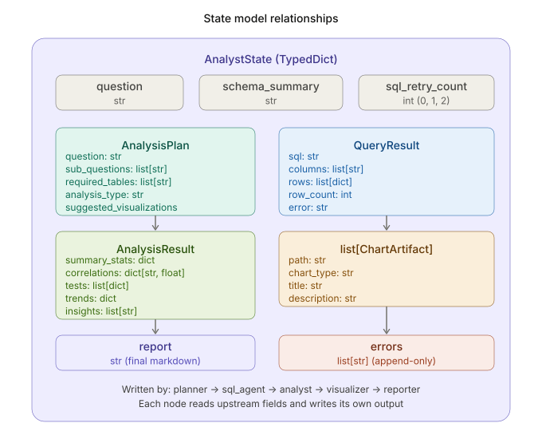
Step 3: The Planner Agent
The planner takes the user's plain-language question and the schema summary, and uses GPT-4o with structured output to produce an AnalysisPlan. Structured output means the LLM is constrained to return a valid Pydantic object — no free-text parsing, no regex extraction, no JSON guessing.
# src/agents/planner.py
PLANNER_SYSTEM_PROMPT = """You are a data analysis planner. Given a user's
business question and a database schema, create a structured analysis plan.
Your plan should include:
1. The original question restated clearly
2. Sub-questions that need to be answered via SQL
3. Which tables are required
4. The type of analysis (trend, comparison, distribution, ranking, aggregation)
5. Suggested visualizations (bar, line, pie, scatter, histogram)
Be specific about what SQL queries are needed and what analysis to perform."""
def create_planner_node(llm: ChatOpenAI):
def planner_node(state: AnalystState, config=None) -> dict:
structured_llm = llm.with_structured_output(AnalysisPlan)
plan = structured_llm.invoke([
SystemMessage(content=PLANNER_SYSTEM_PROMPT),
HumanMessage(content=(
f"Database Schema:\n{state.schema_summary}\n\n"
f"Question: {state.question}"
)),
], config=config)
return {"plan": plan}
return planner_nodellm.with_structured_output(AnalysisPlan) forces GPT-4o to return a valid Pydantic object. This eliminates brittle regex parsing, handles edge cases automatically, and gives you compile-time type safety downstream. Every node that reads the plan knows exactly what fields are available.
Step 4: SQL Agent (Safe Query Generation)
The SQL agent is where natural language becomes executable code. Safety is enforced at three layers: a keyword blocklist before execution, a read-only database session, and a query timeout. If any check fails, the query is rejected before it touches the database.
# src/tools/db_query.py — Safety checks
FORBIDDEN_KEYWORDS = {
"INSERT", "UPDATE", "DELETE", "DROP", "ALTER",
"CREATE", "TRUNCATE", "GRANT",
}
def validate_sql(sql: str) -> str | None:
"""Return error message if SQL contains forbidden keywords."""
tokens = set(sql.upper().split())
violations = tokens & FORBIDDEN_KEYWORDS
if violations:
return f"Forbidden SQL keywords detected: {violations}"
return None
# Connection-level safety (src/db/connection.py)
with self._pool.connection() as conn:
conn.execute("SET statement_timeout = '30s'")
conn.execute("SET default_transaction_read_only = ON")
cursor = conn.execute(sql)
rows = cursor.fetchmany(10_000) # Hard row limit# src/agents/sql_agent.py
def create_sql_agent_node(llm: ChatOpenAI, pool: DatabasePool):
def sql_agent_node(state: AnalystState, config=None) -> dict:
plan = state.plan
messages = [
SystemMessage(content=SQL_AGENT_SYSTEM_PROMPT),
HumanMessage(content=(
f"Database Schema:\n{state.schema_summary}\n\n"
f"Question: {plan.question}\n"
f"Sub-questions: {plan.sub_questions}\n"
f"Required tables: {plan.required_tables}\n"
f"Analysis type: {plan.analysis_type}"
)),
]
response = llm.invoke(messages, config=config)
sql = response.content.strip().strip("```sql").strip("```").strip()
# Validate before executing
error = validate_sql(sql)
if error:
return {"query_result": QueryResult(sql=sql, error=error),
"errors": [error]}
# Execute safely
try:
rows, columns = pool.execute_query(sql)
return {"query_result": QueryResult(
sql=sql, columns=columns,
rows=rows, row_count=len(rows)
)}
except Exception as e:
return {"query_result": QueryResult(sql=sql, error=str(e)),
"errors": [f"SQL error: {e}"]}
return sql_agent_nodeSET default_transaction_read_only = ON prevents any writes even if a keyword slips through. (3) Statement timeout at 30 seconds prevents runaway queries from locking the database.
Step 5: Error Recovery (SQL Error Handler)
Not every query succeeds on the first attempt. Column names might be slightly off, a table might require a JOIN the LLM missed, or the syntax might not match the PostgreSQL dialect. The error handler feeds the error message back to GPT-4o along with the original plan and schema, giving it a chance to fix the query.
# src/graph/routing.py
MAX_SQL_RETRIES = 2
def route_after_sql(state: AnalystState) -> str:
"""Route after SQL execution based on result state."""
qr = state.query_result
if qr.error:
if state.sql_retry_count < MAX_SQL_RETRIES:
return "sql_error_handler" # retry
return "reporter" # exhausted → partial report
if qr.row_count == 0:
return "reporter" # no data → partial report
return "analyst" # success → continue pipeline# src/agents/sql_error_handler.py
def create_error_handler_node(llm: ChatOpenAI):
def error_handler_node(state: AnalystState, config=None) -> dict:
messages = [
SystemMessage(content=ERROR_HANDLER_PROMPT),
HumanMessage(content=(
f"Original SQL:\n{state.query_result.sql}\n\n"
f"Error:\n{state.query_result.error}\n\n"
f"Schema:\n{state.schema_summary}\n\n"
f"Plan:\n{state.plan.model_dump_json()}\n\n"
"Please fix the SQL query."
)),
]
response = llm.invoke(messages, config=config)
fixed_sql = response.content.strip().strip("```sql").strip("```").strip()
return {
"query_result": QueryResult(sql=fixed_sql),
"sql_retry_count": state.sql_retry_count + 1,
}
return error_handler_nodeStep 6: Statistical Analyst
The analyst node is deliberately LLM-free. Statistical computations must be deterministic and reproducible. The StatsToolkit class wraps pandas and scipy to provide five analysis methods that are selected automatically based on the data shape.
# src/tools/stats_toolkit.py
class StatsToolkit:
"""Statistical analysis on query result DataFrames."""
def descriptive_stats(self, columns=None) -> dict[str, Any]:
"""Mean, std, min, max, median, skewness, kurtosis."""
def correlation_matrix(self) -> dict[str, dict[str, float]]:
"""Pairwise Pearson correlations for numeric columns."""
def t_test(self, col_a: str, col_b: str) -> dict[str, Any]:
"""Welch's independent two-sample t-test."""
def trend_analysis(self, date_col: str, value_col: str) -> dict[str, Any]:
"""Linear regression: slope, R², p-value, direction."""
def group_comparison(self, group_col: str, value_col: str) -> dict[str, Any]:
"""One-way ANOVA for group comparisons."""
def full_analysis(self) -> StatsResult:
"""Run all applicable analyses and return StatsResult."""# src/agents/analyst.py
def analyst_node(state: AnalystState) -> dict[str, Any]:
"""Run statistical analysis — no LLM, pure Python."""
qr = state.query_result
if qr.error or not qr.rows:
return {"analysis": AnalysisResult(
insights=["No data available for analysis."]
)}
toolkit = StatsToolkit(data=qr.rows, columns=qr.columns)
result = toolkit.full_analysis()
insights: list[str] = []
if result.summary:
for col, stats in result.summary.items():
mean = stats.get("mean")
std = stats.get("std")
if mean is not None and std is not None:
insights.append(
f"{col}: mean={mean:.2f}, std={std:.2f}, "
f"range=[{stats.get('min')}, {stats.get('max')}]"
)
return {"analysis": AnalysisResult(
summary_stats=result.summary,
correlations=result.correlations,
insights=insights,
)}| Analysis Method | Library | When Applied | Output |
|---|---|---|---|
| Descriptive Statistics | pandas | Always (numeric columns) | Mean, std, min, max, median, skew, kurtosis |
| Correlation Matrix | pandas | 2+ numeric columns | Pairwise Pearson r values |
| Welch's t-test | scipy | 2 numeric groups | t-statistic, p-value, effect size |
| One-way ANOVA | scipy | 3+ groups | F-statistic, p-value |
| Trend Analysis | scipy | Date + value columns | Slope, R², p-value, direction |
Step 7: Visualizer and Reporter
The visualiser uses GPT-4o to recommend which chart types best represent the data, then ChartBuilder renders them using matplotlib, seaborn, and plotly. The reporter assembles everything into a structured markdown document.
# src/tools/chart_builder.py
class ChartBuilder:
"""Generate charts from DataFrames and save to disk."""
def bar_chart(self, df, x, y, title, name) -> ChartArtifact:
"""Vertical or horizontal bar chart."""
def line_chart(self, df, x, y, title, name) -> ChartArtifact:
"""Time-series or continuous line chart."""
def pie_chart(self, df, labels, values, title, name) -> ChartArtifact:
"""Proportional pie/donut chart."""
def scatter_plot(self, df, x, y, title, name, hue=None) -> ChartArtifact:
"""Scatter plot with optional colour grouping."""
def histogram(self, df, column, title, name, bins=30) -> ChartArtifact:
"""Distribution histogram."""
def plotly_interactive(self, df, chart_type, x, y, title, name) -> ChartArtifact:
"""Interactive Plotly chart saved as HTML."""# src/agents/reporter.py
REPORTER_SYSTEM_PROMPT = """You are a business analyst writing a clear,
actionable report. Structure your report as:
1. **Executive Summary** — Key findings in 2-3 sentences
2. **Question** — The original business question
3. **Methodology** — How the analysis was performed
4. **Key Findings** — Detailed findings with specific numbers
5. **Visualizations** — Reference to generated charts
6. **Recommendations** — Actionable next steps
Use clear business language. Include specific numbers and percentages."""Step 8: Graph Assembly
With all nodes defined, assembling the LangGraph is straightforward. We add each node, wire the edges, and define the conditional routing function after sql_agent.
# src/graph/builder.py
from langgraph.graph import StateGraph
graph = StateGraph(AnalystState)
# Add nodes
graph.add_node("introspect_schema", introspect_node)
graph.add_node("planner", planner)
graph.add_node("sql_agent", sql_agent)
graph.add_node("sql_error_handler", sql_error_handler)
graph.add_node("analyst", analyst)
graph.add_node("visualizer", visualizer)
graph.add_node("reporter", reporter)
# Linear edges
graph.set_entry_point("introspect_schema")
graph.add_edge("introspect_schema", "planner")
graph.add_edge("planner", "sql_agent")
# Conditional routing after SQL
graph.add_conditional_edges(
"sql_agent",
route_after_sql,
{
"sql_error_handler": "sql_error_handler",
"analyst": "analyst",
"reporter": "reporter",
},
)
# Error handler loops back to sql_agent
graph.add_edge("sql_error_handler", "sql_agent")
# Linear edges for the success path
graph.add_edge("analyst", "visualizer")
graph.add_edge("visualizer", "reporter")
graph.set_finish_point("reporter")
# Compile
app = graph.compile()Step 9: Observability Stack
A 7-node pipeline with LLM calls, database queries, and statistical computations generates a lot of telemetry. The AI Data Analyst supports four observability providers, each with a different integration pattern.
| Provider | Integration | Coexistence | Key Feature |
|---|---|---|---|
| LangSmith | Callback | Can run with Langfuse | LangChain-native trace trees |
| Langfuse | Callback | Can run with LangSmith | Open-source, self-hostable |
| Helicone | Proxy | Exclusive with Braintrust | Cost tracking, caching |
| Braintrust | Proxy | Exclusive with Helicone | Evaluation + scoring |
The callback lifecycle follows a 5-phase pattern: creation, injection, propagation, capture, and flush. The diagram below shows how callbacks flow from initialisation through every LLM call to final cleanup.
Initialisation order matters. The dependency chain ensures that Settings are loaded first, then infrastructure (database pool, LLM client), then the graph, then runtime execution, and finally cleanup.
Here is what a real Langfuse trace looks like for a complete pipeline run. You can see the full node execution tree, token counts per LLM call, and the JSON output of each node.
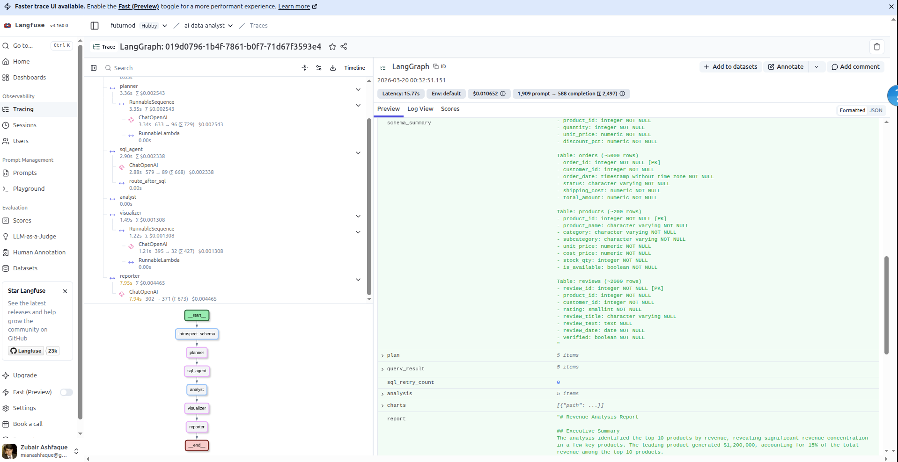
Step 10: Streamlit Dashboard Walkthrough
The Streamlit dashboard is the user-facing interface. It provides a query input, real-time pipeline progress, and four result tabs (Report, Charts, SQL Data, Insights). The sidebar displays the database schema so users know exactly what data is available. Let us walk through every screen.
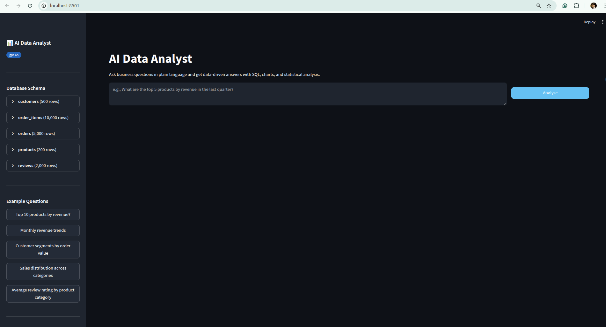
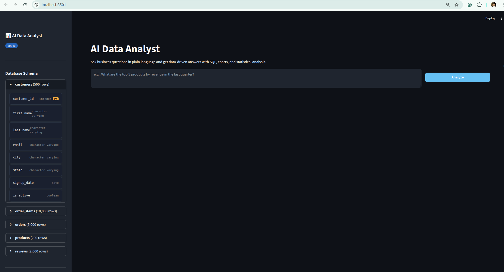
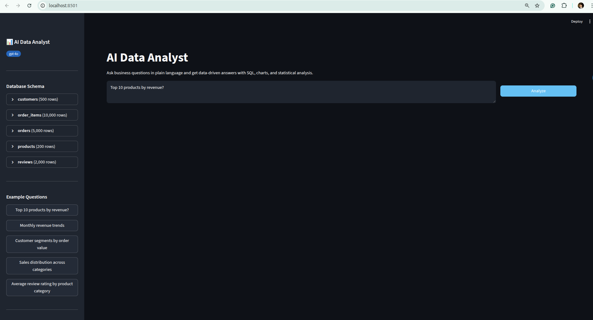
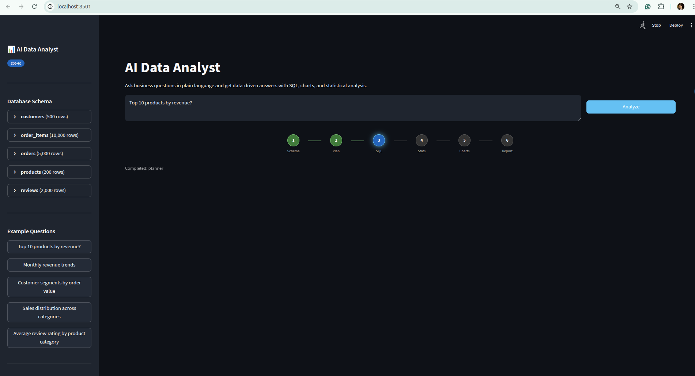
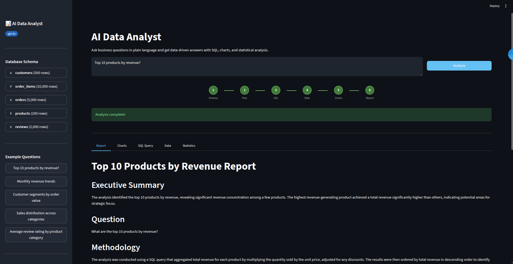
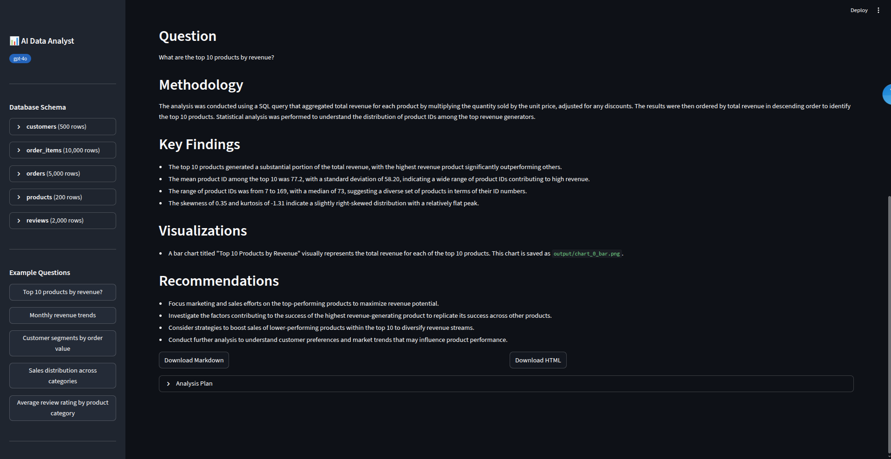
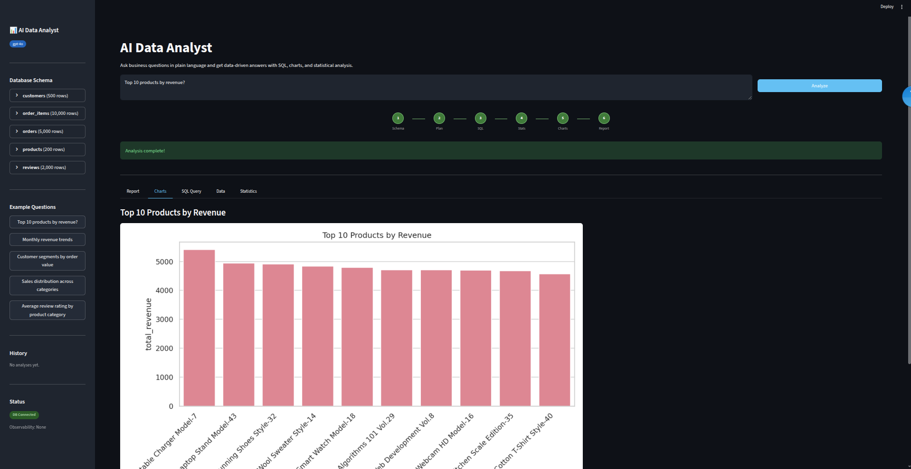
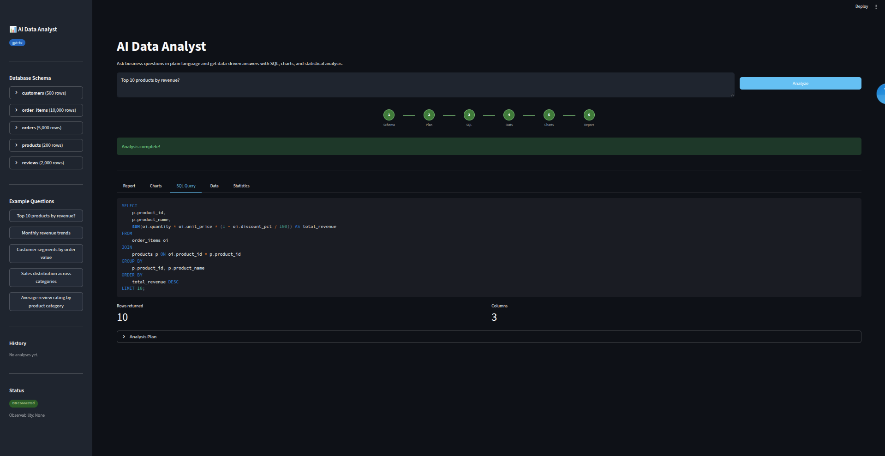
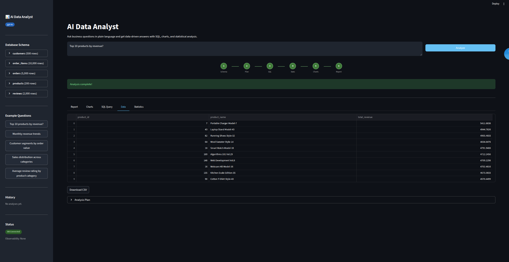
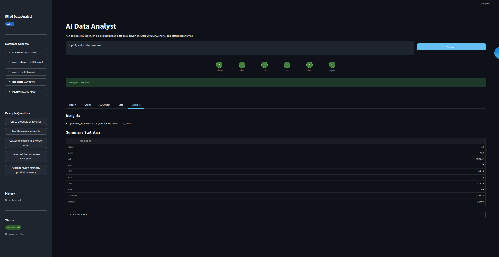
Step 11: Get the Code
AI Data Analyst
The complete codebase including the 7-node LangGraph pipeline, safe SQL generation with keyword blocklist and read-only sessions, StatsToolkit with 5 analysis methods, ChartBuilder with 6 chart types, markdown reporter, Streamlit dashboard, and multi-provider observability stack (LangSmith, Langfuse, Helicone, Braintrust).
View RepositoryConclusion
We built a production-grade AI Data Analyst that takes a plain-language business question and autonomously produces SQL, statistical analysis, charts, and a structured markdown report. The 7-node LangGraph pipeline handles the entire workflow: schema introspection gives the LLM accurate context, the planner decomposes questions into executable plans, the SQL agent generates safe read-only queries with a 3-layer safety stack, the error handler recovers gracefully from failures, the analyst runs deterministic statistics with pandas and scipy, the visualiser creates publication-quality charts, and the reporter assembles everything into a professional document.
Key Takeaways
- Safety is non-negotiable: Three layers of SQL protection (keyword blocklist, read-only sessions, statement timeout) prevent data mutation regardless of what the LLM generates.
- Deterministic statistics beat LLM "calculations": The analyst node uses pure pandas and scipy. No hallucinated numbers, no non-reproducible results. Mean is mean. Standard deviation is standard deviation.
- Graceful degradation over hard failures: If SQL fails after two retries, the system produces a partial report explaining what went wrong, rather than showing a blank screen.
- Observability is a first-class citizen: Four providers (LangSmith, Langfuse, Helicone, Braintrust) give full visibility into every LLM call, token count, latency, and decision path.
- Structured output eliminates parsing fragility: Using
.with_structured_output()for the planner and visualiser means no regex, no JSON parsing errors, and compile-time type safety.
Future Work
- Multi-database support: Extending the schema introspector to support MySQL, SQLite, and BigQuery alongside PostgreSQL.
- Streaming responses: Adding token-by-token streaming for the reporter node so users see the report being written in real time.
- Additional chart types: Heatmaps, box plots, and geographical maps for location-based data.
- Conversational follow-ups: Allowing users to ask follow-up questions that build on the previous analysis context.
- Evaluation framework: Expanding the Braintrust evaluation suite with more scorers for SQL correctness and report quality.